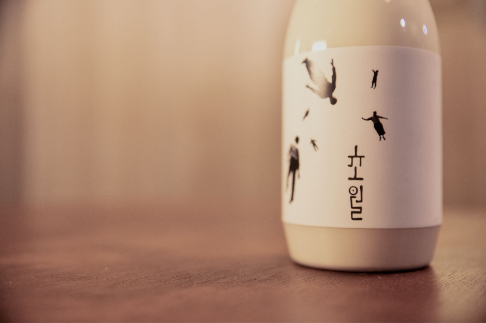
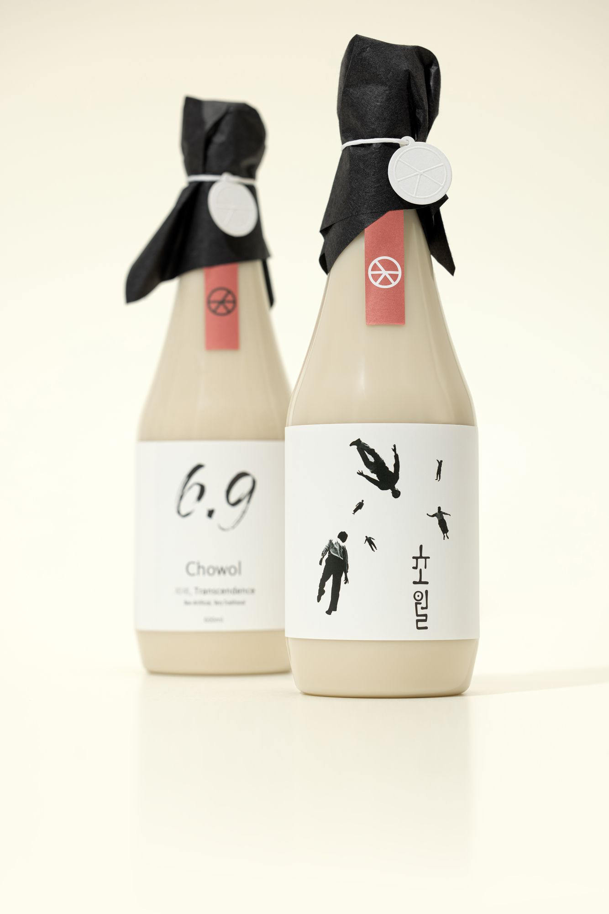
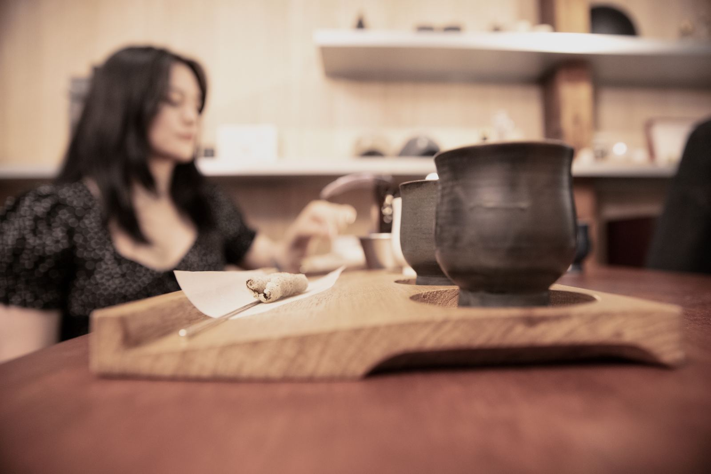
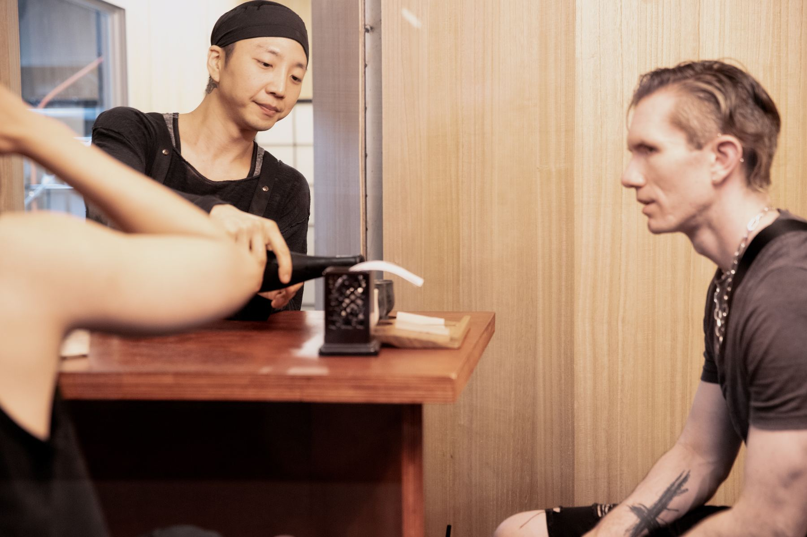

막걸리를
초월하다
해남 쌀과 누룩, 물로 빚는 막걸리.
서울 마포의 양조장에서 만듭니다.

감미료를 넣지 않고, 쌀과 누룩, 물로만 빚습니다. 오래 발효하고 숙성한 막걸리 한 잔을 식탁 위에 올립니다.





네 가지 초월
전체 라인업

- 쌀해남 쌀 · 찹쌀
- 누룩전통 누룩
- 물감미료 없이
- 시간48일 · 56일 이상


 초월
방문 예약
초월
방문 예약
해남 쌀과 누룩, 물로 빚는 막걸리.
서울 마포의 양조장에서 만듭니다.
감미료를 넣지 않고, 쌀과 누룩, 물로만 빚습니다. 오래 발효하고 숙성한 막걸리 한 잔을 식탁 위에 올립니다.



